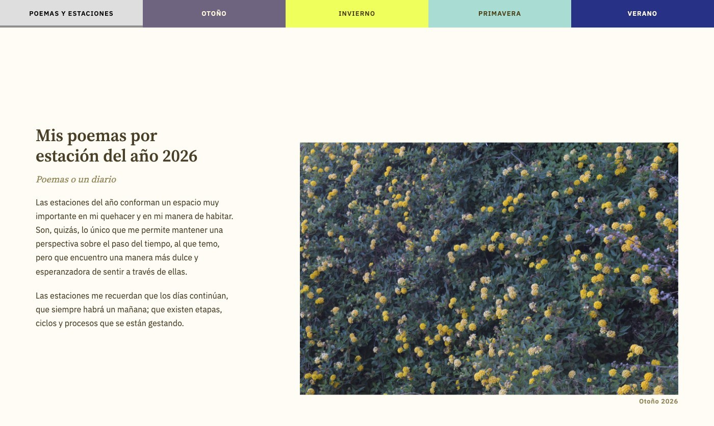

← Volver a proyectos
Web de poemas
Web · Poesía · Poesía visual · 2026Este proyecto es una publicación que organiza los poemas que escribo en cada estación del año. Cada período se acompaña de una curaduría de fotografías asociadas a esa estación, que son transformadas en mosaicos mediante herramientas de p5.js, incorporando texturas y efectos visuales. De esta manera, la escritura se relaciona con el registro fotográfico y el paso del tiempo a través de una experiencia visual.
